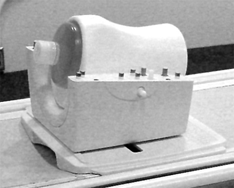
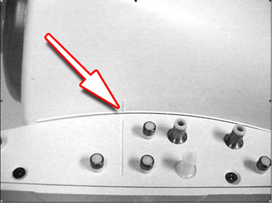
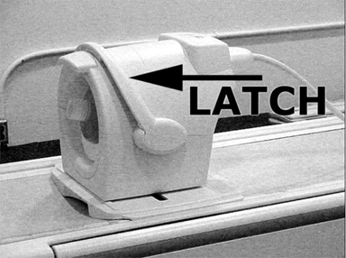
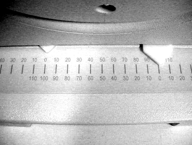
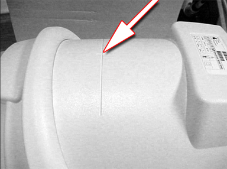

Operating Documentation
Direction 5670000, Rev# 1
Optima MR450w 1.5T Service Methods
Module Version 5.0, Version Date 2/9/10
Operating Documentation |
| Required Persons | Preliminary Reqs | Procedure | Finalization |
|---|---|---|---|
| 1 | Not Applicable | 15 mins | Not Applicable |
| Item | Qty | Effectivity | Part# | Manufacturer | |
|---|---|---|---|---|---|
| Phantom | 1 | - | 5160254-4 | Invivo | |
| Phantom Positioner | 1 | - | 5114356-12 | Invivo | |
| Condition | Reference | Effectivity |
|---|---|---|
The following coil configuration names must be installed to run this tool: HD T/R Knee PA. | - | - |
| NOTE: | If installing the coil for the first time in a system, please refer to Auto Coil Install. |
Place the 3T HD Knee Array, the phantom positioner, and the phantom on the patient cradle as shown in Illustration 1. Take note of the serial number of the coil.
Illustration 1: Coil and Phantom Setup

Ensure that the phantom positioner is aligned with the posterior coil section as indicated by the marks on the positioner (see Illustration 2).
Illustration 2: Phantom Positioner Alignment Marks

Being careful to align the connector pins, place the anterior coil section onto the posterior coil section and latch into place (see Illustration 3). The scanner will not operate if the coil sections are not latched correctly.
Illustration 3: Anterior Coil Section in Place

Ensure that the coil is aligned and centered with respect to the baseplate as indicated by the arrows on the baseplate offset scale (see Illustration 4).
Illustration 4: Align and Center the Coil

Establish an axial landmark using the reference mark on top of the coil (see Illustration 5). Advance to scan.
Illustration 5: Establish Landmark

No finalization steps.